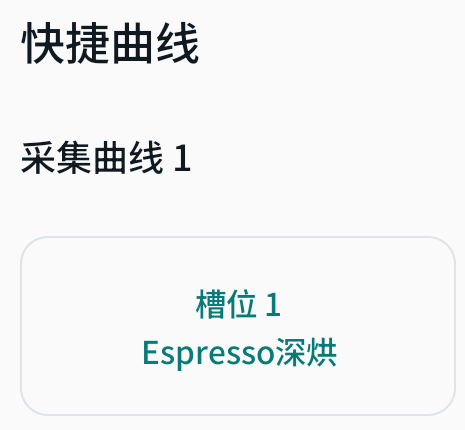
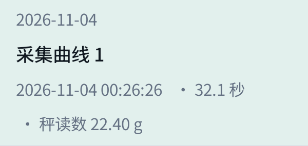

常用曲线，放在首页
开始前，选择这次要用的萃取曲线。

蓝牙连接你的咖啡机和电子秤。选曲线、看过程、查记录，都在一个应用里。

Android 8.0 及以上 · 手机和平板
当前提供测试版，并非正式版本。
试用时请在机器旁看守。
独立开发，非 HOYI 官方应用。
以下是平板开发演示图，使用模拟数据；不是手机截图，也不保证与下载的测试版一致。
开始前，选择这次要用的萃取曲线。

时间、秤上重量和用过的曲线，之后还能查看。

其他电子秤还没有经过实机验证。不在已确认范围内的设备，先不要依赖它来控制萃取。
以上是开发版本的接入范围，不代表本页测试包已逐项验证。请以你的实际型号、协议和固件为准。
不确定固件版本？先在现有应用或设备信息中核对，不要仅凭品牌判断。
了解测试版并下载v0.2.0-rc.2 · 2026-11-04 · 约 18.4 MiB
这是连接真实设备的测试版，不是模拟演示，也不是稳定版。
本页图片来自平板开发演示包，使用模拟数据，与这个测试版可能不同。
下载 Android 安装包APK 安装包，仅适用于安卓设备。下载由 GitHub 提供。
版本说明 / 下载失败时查看发布页Debug / Alpha 预发布，使用 Android Debug 测试签名，非正式发行签名。此包可调试，不是生产安全加固版本。
源码提交映射是构建方声明，sourceCommitVerified=false，不代表可重复构建认证。现有版本更高或签名不一致时不要强行覆盖。
下载后打开安装包，按安卓提示安装。需要安装来源权限时，只授权打开此文件的浏览器或文件管理器，安装后可关闭；不要关闭系统安全检测。
已有旧版？安装冲突、签名不一致或提示降级时，请停止安装，不要卸载旧版或清除数据。
先确认机器空闲，开启蓝牙，允许应用请求的扫描、连接权限。断开其他应用的设备连接，选择咖啡机，按提示输入六位设备密码。电子秤需单独连接，并进入可发现状态。
等待设备就绪、读数更新后，再选择已支持的曲线。试用全程留在机器旁；异常时使用机器本身的停止方式，不反复点击应用控制按钮。
检查蓝牙和应用权限，断开其他应用的连接，让电子秤进入可发现状态，再核对型号与固件是否在支持范围。若操作结果不明确，先核对设备实际状态，不要反复发送控制指令。
可以并存，但同一台设备不能同时被多个应用连接。旧版记录不会自动迁移，需手动导出、导入；不要通过卸载旧版或清除数据解决冲突。
OpenHOYI 是个人实验项目，与咖啡机制造商无关联，也未获其认证。应用会发送蓝牙控制指令，软件缺陷或兼容性问题可能导致控制异常、数据丢失、设备不可用或损坏。目标重量自动停止、设置写入、异常恢复和覆盖升级仍待完整验收，不适合无人看守使用。
在适用法律允许的最大范围内，软件按“现状”提供，不作保证；本声明不排除法律规定不得排除的责任。请在机器旁看守，保留机器本身的停止手段。网站不连接设备，不采集设备数据。